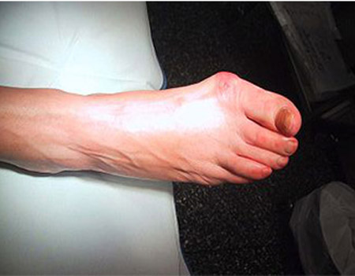
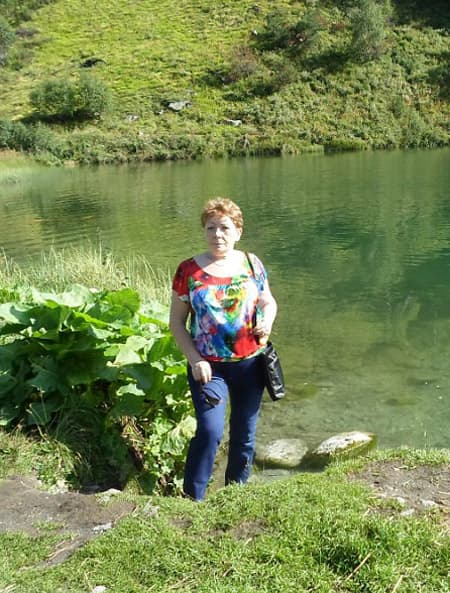
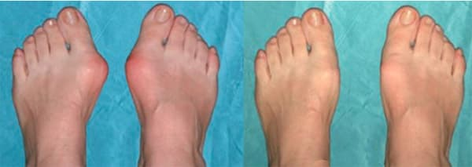
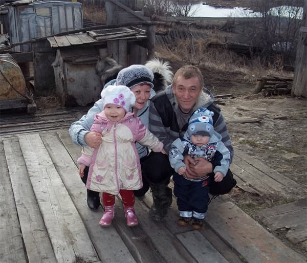
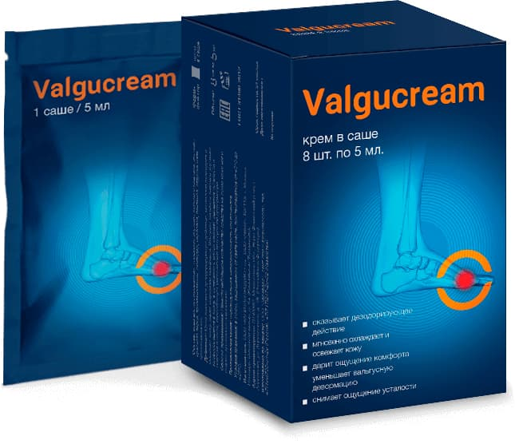
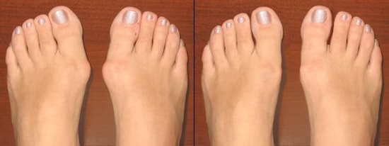
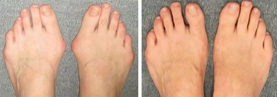

Лидия Петровна: КАК Я ИЗБАВИЛАСЬ ОТ КОСТОЧКИ НА НОГАХ ЗА 1 МЕСЯЦ! НЕ СПЕШИТЕ ЛОЖИТЬСЯ ПОД НОЖ!
Наверное, таких как я – простых, пожилых и уже не совсем здоровых женщин у нас в стране миллионы. У каждой первой то гипертония, то диабет, то еще какая-нибудь болячка. А то и несколько. Мне врачи поставили диагноз - валгусная деформация стоп, а по-народному «косточка» или «шишка» на большом пальце. У меня от неё страдали и бабушка, и мама. Маме даже операцию делали. Так что у меня это наследственное. Да и в молодости любила пофорсить в узких «лодочках» на высоких «шпильках».

В свои 54 года у меня валгусная деформация стоп, которая раньше
устранялась только операцией
Болезнь довольно быстро прогрессировала. Сначала эта шишка доставляла мне просто дискомфорт на ноге. Потом стала сильно болеть. Из-за того, что большой палец стал изгибаться внутрь стопы, он стал толкать второй, тот стал подниматься вверх и упираться в верх носка обуви. А внизу стопы образовался болезненный мозоль. И к своим 54-м годам я в своей обуви уже вообще не могла ходить! В ней мои ноги были словно в раскаленных тисках.
Мужу, он у меня охотник и на все руки мастер, пришлось даже пошить для меня из кожи что-то вроде сапожек-лаптей. В них и ходила, благо живу в селе, а работаю на почте. Там мои ноги никто не видит. Но все равно, даже после небольшой ходьбы ноги болели жутко. А вы представляете сельскую женщину, которая не может долго стоять на ногах? Ведь все хозяйство, все эти куры-гуси, все на мне. И еще мать у меня, после операции на стопах, все равно не могла долго ходить, приходилось и за ней ухаживать. А еще я любила вместе с мужем на охоту сходить. Какая уж тут стала охота… В общем, все поломала мне проклятая болезнь! Хорошо хоть невестка стала помогать, а то бы и не знаю, что делала.
Поехала я в областной центр, в Томск. Там врач посмотрел-посмотрел на мои ноги и сказал, что тут уже ничего не сделаешь и надо оперироваться, если хочу ходить. А то у меня уже начался хронический бурсит большого пальца (воспаление) и стал развиваться артроз.

Из-за сильных болей в ноге даже чудесная природа нашего сибирского
края перестала меня радовать. Постепенно прогулки сошли на нет.
Вышла я от врача и заплакала. Ведь в той же больнице лечили мою маму. Сколько она к ним раз ездила на лечебную физкультуру. Сколько денег отвезла. Все без толку. А потом операцию сделали. Стало, конечно, полегче. Но боли все равно остались. И много ходить она все равно не может.
Но делать нечего. Стали мы собирать деньги на операцию. Без нее я вообще не смогла бы ходить. Но как-то утром приходит ко мне в комнату сын и со своего телефона начинает читать. Оказывается, он нашел в Интернете статью, в которой пишется, о креме "Valgucream". Его наносят на косточку, после чего он снимает воспаление и уменьшает деформацию. И люди пишут, что за месяц, смогли выпрямить палец, убрать эту проклятую шишку и обойтись без операции! Представляете!!
Сын тут же по Интернету заказал этот крем за 196 руб. Через неделю я уже смогла его использовать.
Как только я начала его наносить, спустя пару дней, я почувствовала, что болеть стопы стали меньше.
Спустя неделю, боли практически исчезли. Через неделю еще больше. Спустя месяц я смогла вновь надеть любимую обувь. Вначале было немного дискомфортно, но за две недели, я практически смогла выпрямить свой большой палец и убрать шишку! А за месяц я полностью избавилась от валгусной деформации!

Результат месячного лечения при помощи
крема "Valgucream"
После выздоровления прошло полгода. Я вновь могу свободно ходить, вести хозяйство, ходить на охоту и заниматься внуками.
После выздоровления я зажила полноценной жизнью – вновь с мужем стала
ходить на охоту

Заниматься внуками
Все же, какое это счастье – быть здоровой! Спасибо разработчикам крема "Valgucream"
P.S. Сын заказывал крем "Valgucream" на официальном сайте производителя по цене 196 руб.

Отличная вещь! Раньше носила только бесформенные широкие сабо, а еще лучше – домашние мягкие тапочки. Пользуюсь кремом "Valgucream" уже около месяца – теперь хожу с дочкой, выбираю себе любую обувь в магазинах.
Я балерина, не так чтобы известная, но в своем городе обо мне знают. То, что на сцене я «блещу» во всей красоте – адский труд для меня. Встать на пуанты в последнее время вообще не могла – деформация стопы. Если для кого-то шишечки приносят только эстетический дискомфорт, для меня они значили окончание карьеры. На крем "Valgucream". попала случайно – у своей коллеги увидела. Спросила, что это, она все о ней рассказала. Решила тоже заказать попробовать. Таких результатов я, если честно, не ожидала. А ведь думала, что все, прощай балет, прощай танцы.

А я делала операцию даже лет 10 назад. Первое время вроде бы ничего, а потом снова все началось. Суставы болят, косточка растет, ходить не могу. Пыталась в интернете найти что-то полезное, так там вообще такую чепуху пишут. То яйцом советовали, то солью. Под нож опять ложиться не хотела. Наткнулась на подобную статью, попробовала, помогло.
А те, кто говорят, что эффекта нет – по-любому на подделку нарвались!
О креме "Valgucream" знаю не понаслышке. Сама с ее помощью вылечилась. Хочу добавить, что Лидии Петровне очень повезло, что сын наткнулся именно на это средство.